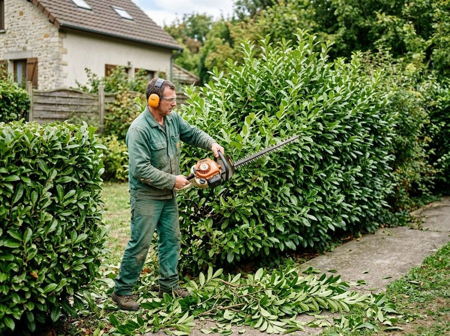
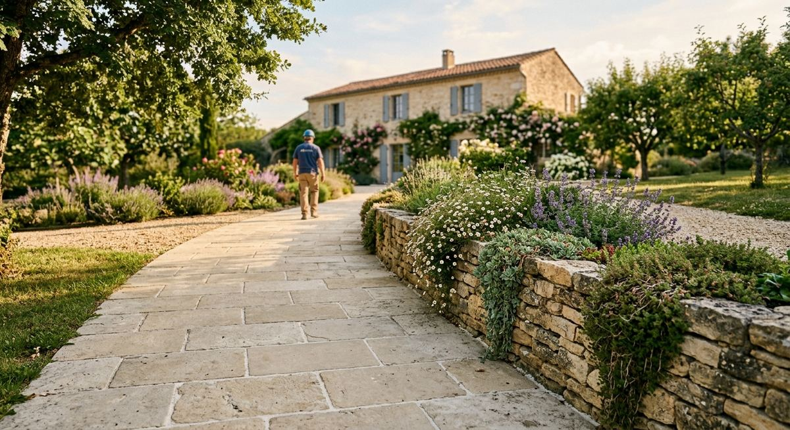
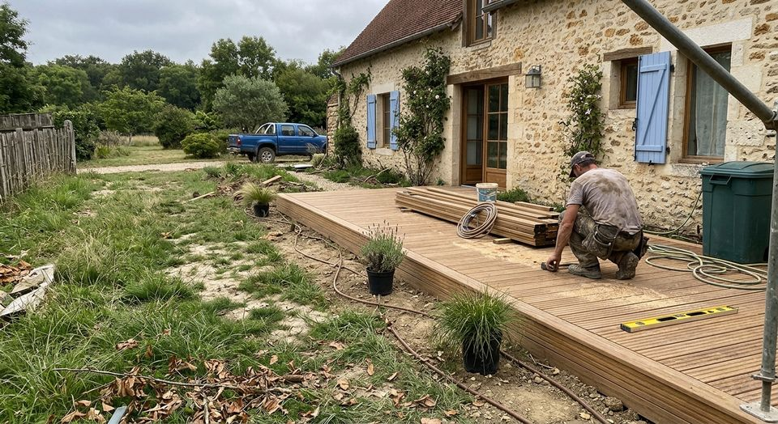
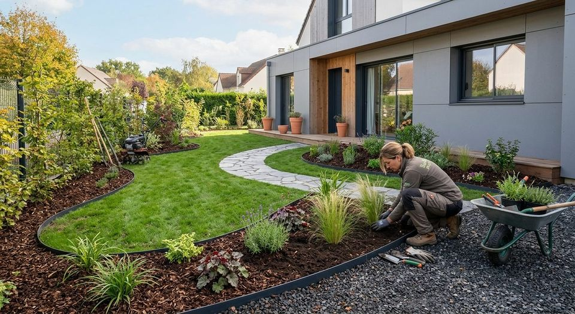

01
Entretien de jardin
Un jardin suivi reste net et en bonne santé. Décrivez-nous votre terrain et ce qu'il demande : nous établissons un devis adapté.
En savoir plus →AS VERT accompagne les propriétaires de Versailles dans l'entretien et l'aménagement de leurs espaces verts. Chaque projet est étudié et chiffré sur devis.

Que votre jardin ait besoin d'un suivi régulier ou d'un nouveau tracé, AS VERT étudie votre besoin et vous remet un devis.

Un jardin suivi reste net et en bonne santé. Décrivez-nous votre terrain et ce qu'il demande : nous établissons un devis adapté.
En savoir plus →
L'aménagement des espaces extérieurs de votre propriété, pensé selon votre projet, votre terrain et votre manière de vivre dehors.
En savoir plus →
Pelouse, massifs, plantations : un espace vert dessiné de façon cohérente avec la maison qu'il accompagne.
En savoir plus →
AS VERT est dirigée par Gregory Renard. L'entreprise intervient dans le domaine des services d'aménagement paysager, depuis Versailles.
Par téléphone ou via le formulaire : dites-nous où se situe votre jardin et ce que vous souhaitez.
Nous précisons ensemble la nature des travaux, le terrain et vos attentes.
Chaque prestation est proposée sur devis, établi à partir de votre demande.
Indiquez-nous votre commune et votre besoin : nous revenons vers vous avec une proposition.